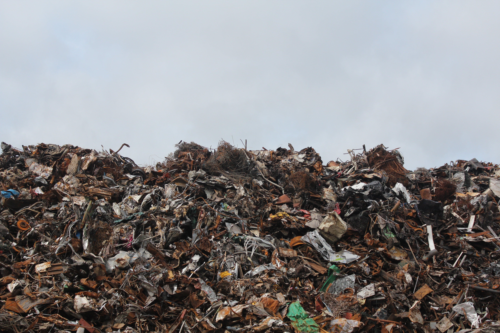
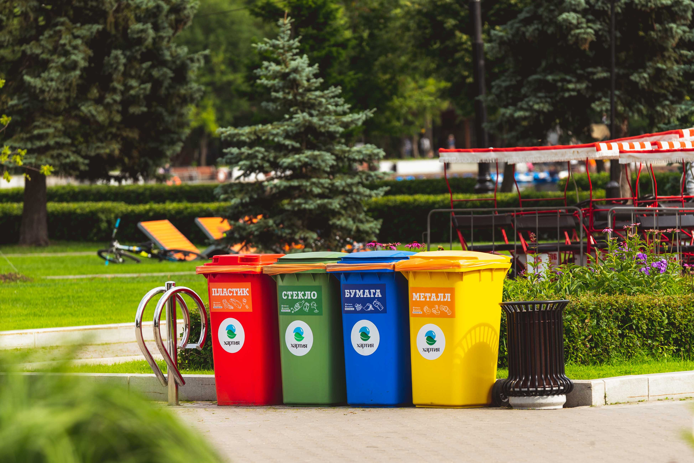
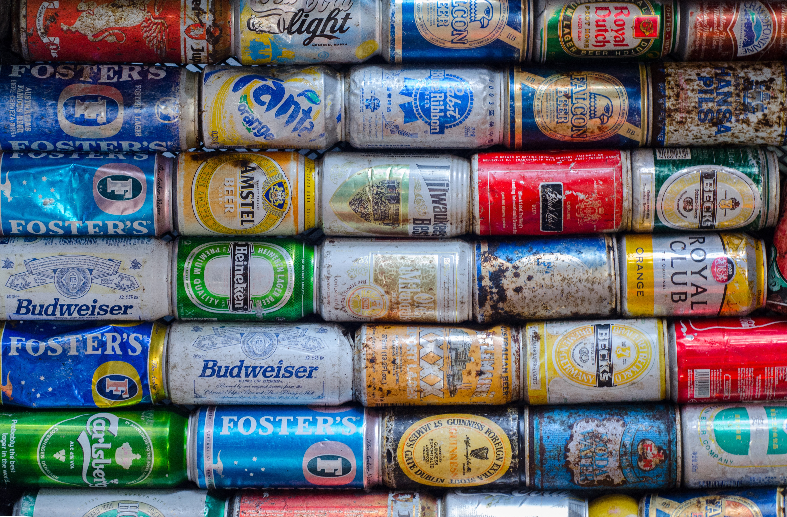
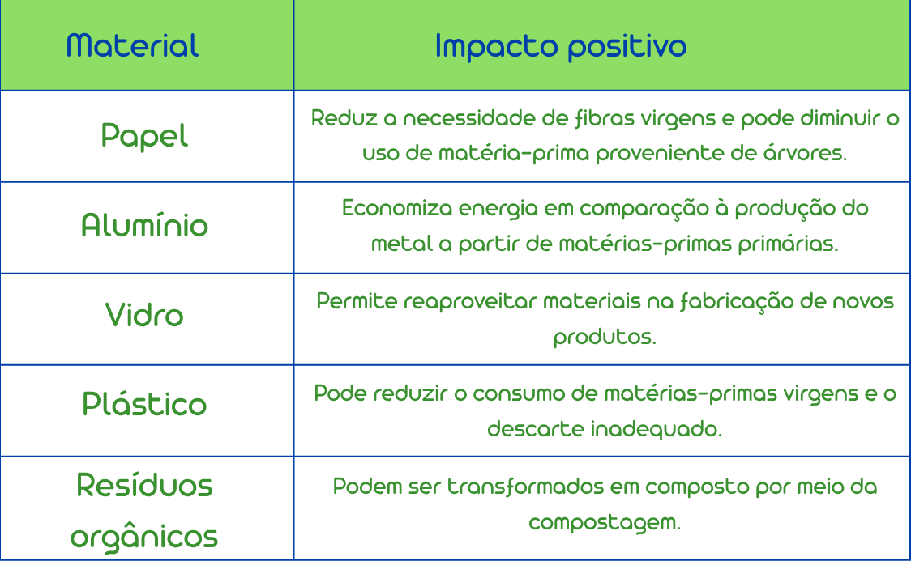
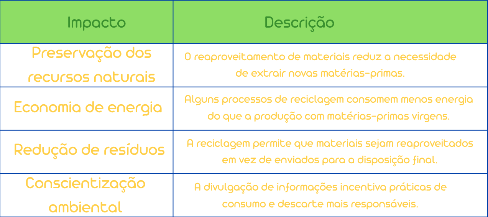
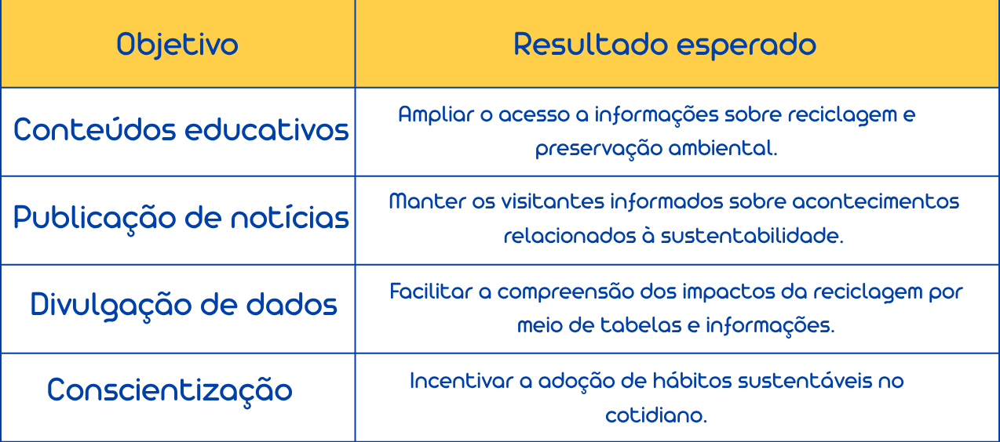

Residuos gerados no Brasil: 81,6 milhões de toneladas
O Brasil gerou esse volume de resíduos sólidos urbanos em 2024, segundo o Panorama dos Resíduos Sólidos no Brasil 2025, da ABREMA.


O Brasil gerou esse volume de resíduos sólidos urbanos em 2024, segundo o Panorama dos Resíduos Sólidos no Brasil 2025, da ABREMA.

Essa foi a proporção de resíduos sólidos urbanos recuperados por reciclagem de materiais secos no Brasil em 2024, segundo o mesmo panorama.

A reciclagem do alumínio pode economizar aproximadamente 95% da energia necessária para produzir o metal a partir da matéria-prima primária, conforme dados apresentados em documento das Nações Unidas.


